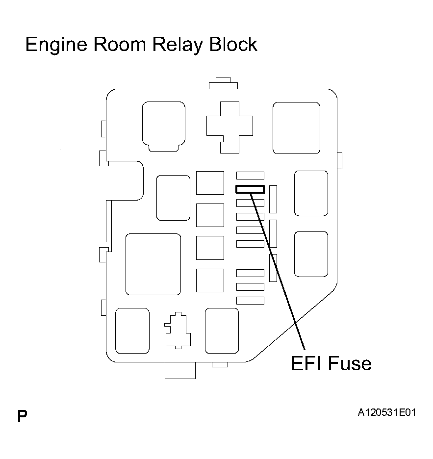
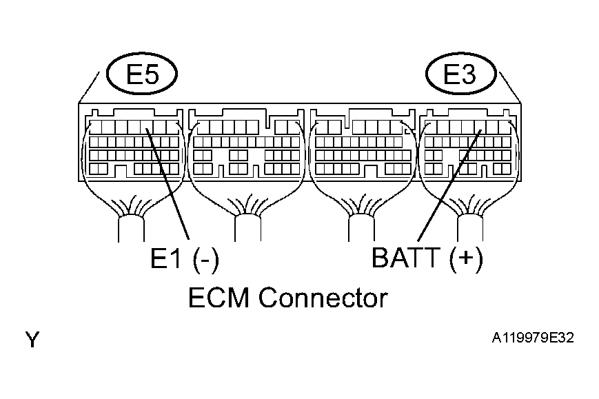

Inspection Procedure
HINT:
Read freeze frame data using the intelligent tester. Freeze frame data records the engine conditions when malfunctions are detected. When troubleshooting, freeze frame data can help determine if the vehicle was running or stopped, if the engine was warmed up or not, if the air-fuel ratio was lean or rich, and other data from the time the malfunction occurred.
- CHECK FUSE (EFI)
- Remove the EFI fuse from the engine room relay block.
- Measure the resistance of the EFI fuse.
Standard resistance: Below 1 Ω
NG: CHECK FOR SHORT IN ALL HARNESSES AND COMPONENTS CONNECTED TO FUSE

Courtesy of © TOYOTA, LICENSE AGREEMENT TMS1002OK: Go to Next Step
- INSPECT ECM (BATT VOLTAGE)
- Measure the voltage of the E3 and E5 ECM connectors.
Standard voltage
TESTER CONNECTION - SPECIFIED CONDITIONSTester Connection Specified Condition BATT (E3-3) - E1 (E5-3) 9 to 14 V
NG: Go to step 3

Courtesy of © TOYOTA, LICENSE AGREEMENT TMS1002OK: REPLACE ECM
- Measure the voltage of the E3 and E5 ECM connectors.
- CHECK HARNESS AND CONNECTOR (ECM - EFI FUSE, EFI FUSE - BATTERY)
- Check the harness and connector between the EFI fuse and ECM.
- Remove the EFI fuse from the engine room relay block.
- Disconnect the E3 ECM connector.
- Measure the resistance of the wire harness side connectors.
Standard resistance (Check for open)
TESTER CONNECTION - SPECIFIED CONDITIONSTester Connection Specified Condition Engine room relay block (EFI relay terminal 2) - BATT (E3-3) Below 1 Ω Standard resistance (Check for short)
TESTER CONNECTION - SPECIFIED CONDITIONSTester Connection Specified Condition Engine room relay block (EFI relay terminal 2) or BATT (E3-3) - Body ground 10 kΩ or higher
- Check the harness and connector between the EFI fuse and battery.
- Remove the EFI fuse from the engine room relay block.
- Disconnect the positive (+) battery terminal.
- Measure the resistance of the wire harness side connectors.
Standard resistance (Check for open)
TESTER CONNECTION - SPECIFIED CONDITIONSTester Connection Specified Condition Battery positive terminal - Engine room relay block (EFI relay terminal 1) Below 1 Ω Standard resistance (Check for short)
TESTER CONNECTION - SPECIFIED CONDITIONSTester Connection Specified Condition Battery positive terminal or Engine room relay block (EFI relay terminal 1) - Body ground 10 kΩ or higher
NG: REPAIR OR REPLACE HARNESS OR CONNECTOR
OK: Go to Next Step
- Check the harness and connector between the EFI fuse and ECM.
- INSPECT BATTERY
- Check that the battery is not depleted.
NG: REPLACE BATTERY
OK: CHECK AND REPLACE ENGINE ROOM RELAY BLOCK ASSEMBLY